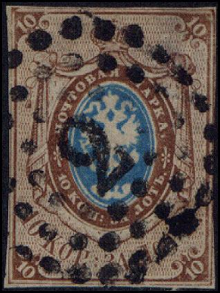

Circle consisting of dots with numeral in the center ("2" and "38" in this case).
Return To Catalogue - Russia Overview
Note: on my website many of the
pictures can not be seen! They are of course present in the
catalogue;
contact me if you want to purchase the catalogue.
When the first stamps of Russia were introduced, it was prescribed by the post office to cancel the stamps with pencil marks. Due to the fact that these could easily be removed it was then decided on 26th February 1858 to cancel them with either dots cancels (with numerals in the center) or cancels that were already used before stamps were issued.
Each number for the numeral cancels corresponded to a particular post office. Some examples of numeral cancels:

Circle consisting of dots with numeral in the center
("2" and "38" in this case).
Similar cancels with a numeral sorrounded by dots, but in an elliptic shape also exist (frontier post offices).

Hexagonal cancel consisting of dots with a number in the center,
used for railway post offices and travelling post offices.
There exist other numeral hexagonal cancels, closely resembling the above numeral cancel, but with the 'points' at horizontally (the above one has two points above and below the numeral, thus vertically). The horizontal ones were cancels for village post offices.
Numeral cancels consisting of dots which form a rectangle were also used.
Other numeral cancels with a numeral in a dotted pattern in the shape of a triangle also exist (for post stations).

Nr 1 in rectangles and Nr 1 in octogonals, numeral cancels used
in Poland.
Numeral cancels in four concentric circles, in a square consisting of several lines, in a octogonal consisting of several lines and letters ('D.W.', 'D.P.' or 'D.B.') in four concentric circles were used in Poland.
Railroad cancel on first stamp of Poland: red 'D.B.' Droga
Bydgoska in four concentric rings for Warsaw railway stations;
other letters exist in the center: 'D.P.' and 'D.W.'.
Special cancellations from 1880 until 1905: Number, Numbers in various frames, in black, blue or violet impressions (usually black), there exist: 1, 2, 3, 4, 5, 6, 7, 8, 9, 13 and 14 and in arabic numerals: XI, XV, XVI, XVII, XXXI. For the XXXI two different types exist. It seems that '1' and '6' are quite common, while 'XV', 'XVI', 'XVII' and ' XXXI' are rare.
1870-1883 From 1870 on dotted cancels with numbers from 1 to 9 were used
(1884 - about 1900), oval number (1, 2 and 3), the 1 and 3 have the same shape, the number is surrounded by a triangle and an oval, the 2 is surrounded by a rectangle and an oval:


{kind=link}
{kind=link}